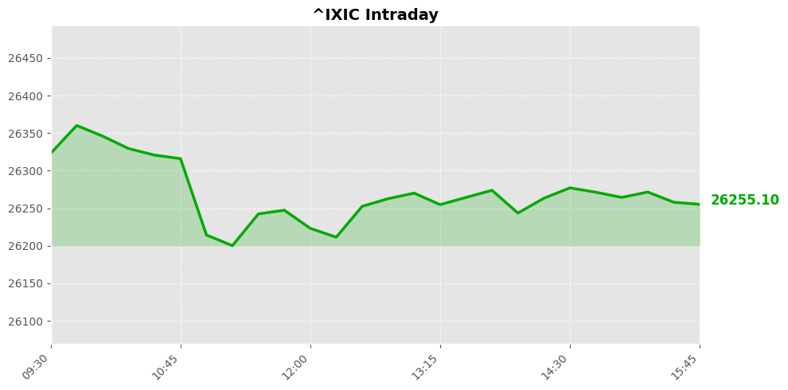
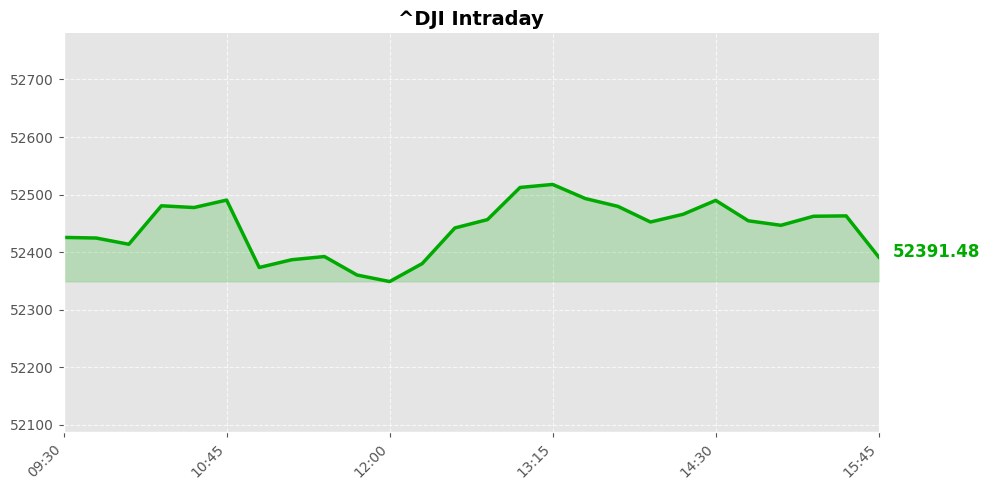
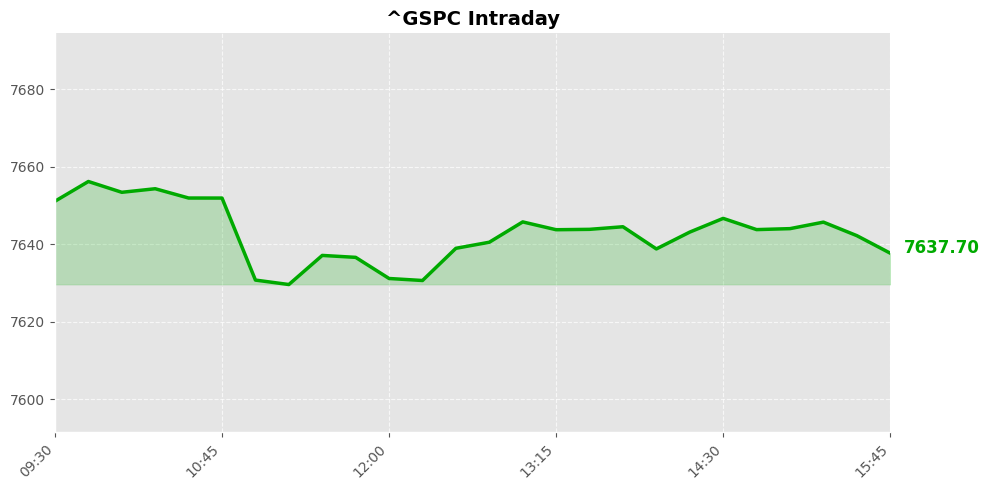

美股市场简报
2026年09月10日 | StockGate 美股通
📊 市场概览



今日三大指数集体收跌，呈现典型震荡调整格局。纳斯达克指数报26253.34点，回落168.07点或0.64%；道琼斯指数收于52380.66点，下挫405.41点跌幅达0.77%；标普500指数最终定格于7636.36点，微跌37.16点。整体显示风险偏好阶段性收敛，资金于高位兑现与数据验证期之间寻求平衡，权重股同步承压，大盘步入技术性休整。
指数走弱伴随资金防御性轮动。科技成长端受估值消化拖累出现回撤，传统金融与公用事业板块则承接避险筹码。盘口数据显示，机构配置重心向低波策略倾斜，期权看跌持仓温和上升，印证短线情绪偏谨慎。全市场量能保持平稳，但领涨标的高度分散，缺乏绝对领涨主线。当前存量博弈特征显著，跨资产套利加速，流动性分布趋于均衡，多头动能蓄力与空头试探形成拉锯。
📰 今日要闻
【要闻焦点】 受中东冲突持续升级影响，布伦特原油价格强势突破每桶一百美元关口，地缘避险情绪直接推高国际大宗商品定价基准。
【投资推演】 能源板块迎来全面看多契机，上游油气开采及油服龙头将凭借量价齐升实现业绩超预期释放。同时，高油价对航空与化工制造构成成本承压，资金需警惕传统燃油车产业链的估值回撤风险。
【要闻焦点】 特朗普公开表态美伊潜在军事冲突将在美国中期选举结束后迅速收场，市场将其视为关键政治时间窗口与政策风向标。
【投资推演】 该表态为国防军工与网络安全板块注入强心剂，相关标的在选举前夜具备显著事件驱动溢价。然而，若地缘摩擦按预期降温，前期避险资金可能集中获利了结，需防范短期交易拥挤带来的快速回撤。
【要闻焦点】 胡塞武装连续两日空袭沙特南部城市，区域航运安全警报拉响，多国联合反制行动加剧海湾核心产油区物流中断隐患。
【投资推演】 红海航道受阻直接催化航运运价指数上行，集装箱运输与特种船舶租赁企业订单能见度显著提升。但供应链重构周期拉长，工业金属与跨境贸易类资产面临物流成本结构性抬升，配置时需严控敞口。
【要闻焦点】 通用电气航空部门重金押注特种铸造工艺，旨在锁定民航发动机核心零部件产能，以应对全球机队更新换代需求。
【投资推演】 高端装备制造链迎来技术壁垒突破，航空航天材料供应商获得长期稳定采购协议，基本面呈现稳健向好态势。该战略将加速行业集中度提升，中小代工企业若无法匹配工艺标准，将面临市场份额流失压力。
【要闻焦点】 道达尔能源正权衡退出与沙特阿美高达两百亿美元的战略合作项目，跨国能源巨头基于资本回报重估重新调整全球布局。
【投资推演】 大型能源集团战略收缩释放并购整合信号，私募股权与独立炼厂有望承接优质资产，相关领域存在波段机会。合作终止亦反映传统化石能源投资回报率见顶，资本加速向新能源转型，传统油气巨头需警惕增长天花板带来的估值折价。
【要闻焦点】 知名投顾明确提示数据中心板块需保持谨慎态度，指出算力基础设施扩张节奏与电力配套进度存在阶段性错配。
【投资推演】 AI算力基建链条进入分化期，光模块与液冷散热等细分赛道仍具景气支撑，但重资产数据中心运营商面临资本开支过大导致的现金流持续承压。投资者应聚焦轻资产运营与高效能散热解决方案提供商。
【要闻焦点】 Meta Platforms凭借新一代个人智能体应用重塑社交生态，当前股价被广泛认为低于内在价值，机构建议逢低布局。
【投资推演】 AI商业化落地进入加速兑现期，广告精准推送与订阅增值服务双轮驱动盈利模型显著改善。算法迭代降低获客成本，平台生态护城河加深，科技成长股中具备确定性的长线配置标的。
【要闻焦点】 阿联酋与德国深化双边关系，聚焦人工智能算力集群、绿色氢能及跨境直接投资三大核心领域签署多项框架协议。
【投资推演】 主权财富基金与欧洲产业资本形成合力，半导体设备与储能电池产业链迎来海外订单增量。德系高端制造出海与中东资本回流形成共振，新能源装备出口商享受政策红利，跨境资本流动为相关ETF提供趋势性催化。
【要闻焦点】 卫星数据显示尽管实施暗渡策略，仍有三分之一霍尔木兹海峡周边原油流向非官方渠道，全球原油库存透明度遭遇严峻挑战。
【投资推演】 影子油市泛滥冲击OPEC+减产纪律执行效果，国际油价上方空间受到实质性压制，多头需警惕供应端隐性放量引发的趋势反转。合规贸易商与合规炼化企业反而因净化市场环境而获得份额提升，行业分化加剧。
【要闻焦点】 北美暑期档票房创历史新高，核心驱动力来自额外一周售票周期及高价沉浸式影厅的普及，观影消费结构发生根本性迁移。
【投资推演】 影视内容制作方现金流大幅回血，头部IP开发公司利润率迎来修复拐点，传媒娱乐板块确认右侧交易信号。高票价模式验证消费者付费意愿韧性，院线设备升级与VR观影体验提供商直接受益于客流质量跃升。
📈 宏观经济数据
💰 利率与货币政策
联邦基金利率： 3.6% 0.0个百分点 （前值: 3.6%）
观察日期: 2026-08-01 | 下次公布: 2026-09-16
10年期国债收益率： 4.8% （前值: .）
观察日期: 2026-09-08 | 下次公布: 2026-09-10
🔥 通胀指标
消费者物价指数(CPI)： 3.3% -0.2个百分点 （前值: 3.5%）
观察日期: 2026-07-01 | 下次公布: 2026-09-11
PCE物价指数： 3.7% -0.0个百分点 （前值: 3.7%）
观察日期: 2026-07-01 | 下次公布: 2026-09-25
核心PCE物价指数： 3.3% +0.0个百分点 （前值: 3.3%）
观察日期: 2026-07-01 | 下次公布: 2026-09-25
生产者物价指数(PPI)： 4.7% -0.9个百分点 （前值: 5.5%）
观察日期: 2026-07-01 | 下次公布: 2026-09-10
👷 就业指标
非农就业人数变化： 159075.0K +162.0K （前值: 158913.0K）
观察日期: 2026-08-01 | 下次公布: 2026-10-02
失业率： 4.1% 0.0个百分点 （前值: 4.1%）
观察日期: 2026-08-01 | 下次公布: 2026-10-02
🛒 消费者指标
零售销售月度变化： -0.6% -0.8个百分点 （前值: 0.2%）
观察日期: 2026-07-01 | 下次公布: 2026-09-16
个人消费支出月度变化： 0.2% -0.2个百分点 （前值: 0.3%）
观察日期: 2026-07-01 | 下次公布: 2026-09-25
🔮 市场展望
【短线策略推演】 隔夜三大指数集体微幅回调，存量资金正加速向避险资产切换。地缘摩擦持续升级直接推动布伦特原油突破百美元关口，能源溢价传导将重塑宏观定价逻辑。下周初美股大概率延续结构性分化，传统周期赛道具备明确的向上驱动动能。若纳指回踩关键均线获得支撑位，权重股有望企稳反弹；反之则需严防流动性收紧引发的深度回撤。
【重点风控与关注焦点】 实战部署务必锚定中东博弈节奏与大宗商品价格曲线。美联储议息会议临近导致市场敏感度骤增，切勿盲目追高。重点关注美国中期选举政治表态对风险情绪的边际影响。仓位管理建议以底仓配置防御性资产为主，警惕高位成长股兑现带来的趋势反转警示，严格执行止损纪律，确保组合韧性。期权端可逢低布局跨式组合对冲尾部波动。
数据来源：Yahoo Finance / Finnhub / Alpha Vantage / FRED / Reddit
报告生成：2026-09-10 04:53
⚠️ 免责声明：美股市场简报 - 2026年09月10日。StockGate 美股通 - 本报告仅供参考，不构成投资建议。投资有风险，入市需谨慎。
🔥 扫码加入【股神星】专属群 🔥
扫码加入股神星交流群，一起享受财富人生
📱 下载飞书App，扫描二维码入群
获取更多美股投资洞察与实时动态